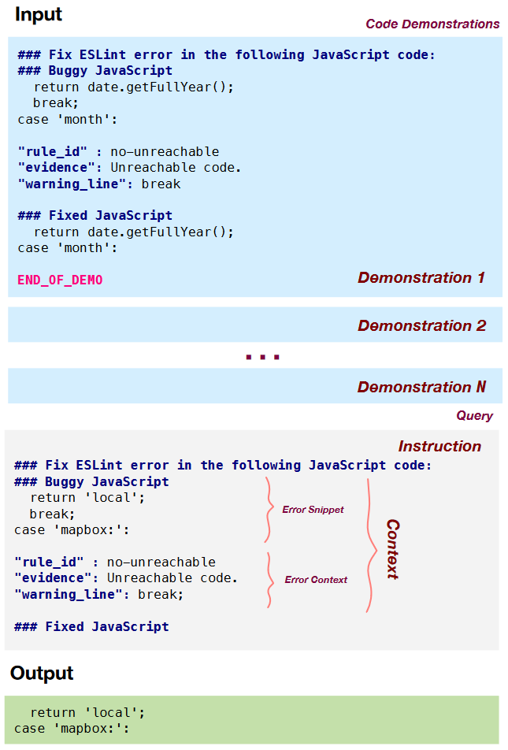

<!DOCTYPE html>
<html lang="en">
  <head>
    <meta charset="utf-8" />
    <meta name="viewport" content="width=device-width, initial-scale=1.0, maximum-scale=1.0, user-scalable=no" />

    <title>ChatGPTPriming</title>
    <link rel="shortcut icon" href="./favicon.ico" />
    <link rel="stylesheet" href="./dist/reset.css" />
    <link rel="stylesheet" href="./dist/reveal.css" />
    <link rel="stylesheet" href="./dist/theme/serif.css" id="theme" />
    <link rel="stylesheet" href="./css/highlight/base16/zenburn.css" />


  </head>
  <body>
    <div class="reveal">
      <div class="slides"><section  data-markdown><script type="text/template">
<style type="text/css"> 
h1,h2,h3,h4,p{ 
  text-align: left; 
}
h1.c,h2.c,h3.c{
  text-transform: capitalize;
}
h1.n,h2.n,h3.n,h4.n{
  text-transform: none;
}
h3.small{
  font-size: 55px;
}
img{
  text-align:left;
}
img.center{
  display: block; /* This is important for margin:auto to work */
  margin-left: 100px;
}
img.fl{
  float:left;
}
img.logo{
  margin-top: -30px;
  margin-bottom: -10px;
  max-width: 20%; 
  height: 60px; 
}
div.sma{
  font-size:35px;
  margin:40px 10px;
}
p.right{
  text-align:right;
  margin-right:100px;
}
p.main{
  font-size:28px;
}
h2.center,h3.center{
  text-align:center;
}
img.tem{
  border-radius: 8pt;
  height:700px;
}
#outter{
  display:flex;
  justify-content: space-around;
}
div.outter{
  display:flex;
  justify-content: space-between;
}
div.inner{
  display:flex;
  flex-direction: column;
  align-items:start;
  justify-content: space-evenly;
}
div.inner1{
  display:flex;
  flex-direction: column;
  align-items:start;
  justify-content: center;
}
div.shell{
  margin-top: -100px;
  margin-left:70px;
}
#ref{
  margin-left:100px;
  margin-top: -100px;
}
#cat{
  display:flex;
  flex-direction: column;
  justify-content:center;
}
span.green{
  color: #609966;
}
</style> 

<div class="shell">
  <h2 class="c">How to make well-defined LLM prompts</h2>
  <br/>
  <div style="text-align:left">
  <ul>
      <li>Authors:&emsp;Lilian Weng, Jianing Wang, fatih kadir akın</li>
      <li>Sources:&emsp;Github, CSDN</li>
  </ul>
  <br/><br/>
  </div>
  <p class="right">汇报人：王小娅</p>
  <p class="right">汇报时间：4.25</p>
</div>


</script></section><section  data-markdown><script type="text/template">

<div class="shell" style="margin-top:-100px">
  <h2>OUTLINE</h2><br/>
  <h3 class="n">Prompt tuning for LLMs</h3>
  <h4 class="n">&emsp;&emsp;In-Context Learning</h4>
  <h4 class="n">&emsp;&emsp;Instruction-tuning & Chain of thought</h4>
  <h4 class="n">&emsp;&emsp;Application in Intelligent Software Engineerning</h4>
  <h3 class="n">Clear&effective ChatGPT prompts</h3>
  <h4 class="n">&emsp;&emsp;Principles of Clear Communication</h4>
  <h4 class="n">&emsp;&emsp;Steps for crafting effective ChatGPT prompts</h4>
  <h4 class="n">&emsp;&emsp;The "act as..." hack</h4>
</div>

</script></section><section  data-markdown><script type="text/template">

<div class="shell" >
  <div id="inner">
    <h2 class="n">What are prompts and prompt engineering?</h2><br/>
    <h3 class="n">Prompts</h3>
    <p>Prompts are the inputs or queries that a user or a program gives to an LLM AI</p>
    <p>Only well-defined prompts can elicit desired answers</p>
    <h3 class="n">Prompt engineering</h3>
    <p>The art of creatively defining LLM AI prompts</p>
    <p>Key challenge - 1: craft the right querys(words,phrases,symbols,and formats)</p>
    <p>Key challenge - 2: set the right parameters(temperature, top-k, top-p, frequency penalty)</p>
  </div>
</div>

</script></section><section  data-markdown><script type="text/template">
<div class="shell" >
  <div id="inner">
    <h2 class="n">3 common considerations of engineering prompts</h2><br/>
    <h3 class="n">1. Prompt chaining</h3>
    <p>Use the generated texts as the basis for the next prompts to extend the dialogue</p>
    <h3 class="n">2. Prompt tuning</h3>
    <p>Adapt and optimize the prompts for specific tasks or domains to improve the accuracy</p>
    <h3 class="n">3. Prompt testing/evaluation</h3>
    <p>Measure and compare the quality and the usefulness of the prompts and the generated texts</p>
  </div>
</div>

</script></section><section  data-markdown><script type="text/template">
<div class="shell" >
  <div id="inner">
    <h2 class="n">The scope of my report</h2><br/>
    <p>✨Prompt tuning for frozen LLMs(above the timeline)</p>
    
  </div>
</div>

</script></section><section  data-markdown><script type="text/template">

<div class="shell">
<h1 class="c">PartⅠ. Prompt tuning for LLMs</h1>
</div>

</script></section><section  data-markdown><script type="text/template">

<div class="shell" >
  <div id="inner">
    <h2 class="n">In-Context Learning</h2>
    <p>1. give the LLM a prompt that consists of a list of input-output pairs that demonstrate a task.</p>
    <p>2. At the end of the prompt, we append a test input and allow the LM to make a prediction.</p>
    <p>3. By examples, the LLM get input distribution, output distribution, input-output map, and the format.</p>
    
  </div>
</div>

</script></section><section  data-markdown><script type="text/template">

<div class="shell">
  <h2 class="n">How to get demostrations?</h2><br/>
  <h3 class="n small">1. Retriveal-based method</h3>
  <p style="font-size:32px">Estimate the probability of the output given the input and a candidate training example and label training examples as P/N, then train an efficient dense retriever from this data.(NAACL'22)</p>
  <h3 class="n small">2. Reinforcement learning method</h3>
  <p style="font-size:32px">Formulate example selection for in-context learning as a sequential decision problem, and propose a reinforcement learning algorithm for identifying generalizable policies.(EMNLP'22)</p>
  <h3 class="n small">3. Autoregressive model method</h3>
  <p style="font-size:32px">Generates demonstrations for in-context learning from PLM itself to minimize the reliance on the external demonstration(NAACL'22)</p></br>
</div>

</script></section><section  data-markdown><script type="text/template">

<div class="shell" >
  <div id="inner">
    <h2 class="n">Instruction-tuning</h2><br/>
    <p>Why not just give the instruction directly?</p>
    <p>Describe the task requirement in details, trying to be specific and precise.</p>

    ```
    Please label the sentiment towards the movie of the given movie review. The sentiment label should be "positive" or "negative". 
    Text: i'll bet the video game is a lot more fun than the film. 
    Sentiment:
    ```

  </div>
</div>

</script></section><section  data-markdown><script type="text/template">

<div class="shell" >
  <div id="inner">
    <h2 class="n">In-context instruction learning</h2>
    <p>Each demonstration consisting of instruction, task input and output</p>
    <br/>

    ```
      Definition: Determine the speaker of the dialogue, "agent" or "customer".
      Input: I have successfully booked your tickets.
      Ouput: agent

      Definition: Determine which category the question asks for, "Quantity" or "Location".
      Input: What's the oldest building in US?
      Ouput: Location

      Definition: Classify the sentiment of the given movie review, "positive" or "negative".
      Input: i'll bet the video game is a lot more fun than the film.
      Output:
    ```
  </div>
</div>

</script></section><section  data-markdown><script type="text/template">

<div class="shell" >
  <div id="inner">
    <h2 class="n">Chain of thought</h2>
    <p>A sequence of short sentences to describe reasoning logics step by step, known as reasoning chains</p>
    <p>Apply to : complicated reasoning tasks & large models (e.g. with more than 50B parameters)</p>
    
  </div>
</div>

</script></section><section  data-markdown><script type="text/template">

<div class="shell" >
  <div id="inner">
    <h2 class="n">Few-shot CoT</h2>
    <p>A few demonstrations, each containing manually written (or model-generated) high-quality reasoning chains.</p>
    <p>It's a lot like a fusion of ICL and instruction-tuning.</p>  

    ```
    Question: Tom and Elizabeth have a competition to climb a hill. Elizabeth takes 30 minutes to climb the hill. 
    Tom takes four times as long as Elizabeth does to climb the hill. 
    How many hours does it take Tom to climb up the hill?
    Answer: It takes Tom 30*4 = <<30*4=120>>120 minutes to climb the hill.
    It takes Tom 120/60 = <<120/60=2>>2 hours to climb the hill.
    So the answer is 2.
    ===
    Question: Jack is a soccer player. He needs to buy two pairs of socks and a pair of soccer shoes. 
    Each pair of socks cost $9.50, and the shoes cost $92. Jack has $40. How much more money does Jack need?
    Answer: The total cost of two pairs of socks is $9.50 x 2 = $<<9.5*2=19>>19.
    The total cost of the socks and the shoes is $19 + $92 = $<<19+92=111>>111.
    Jack need $111 - $40 = $<<111-40=71>>71 more.
    So the answer is 71.
    ===
    Question: Marty has 100 centimeters of ribbon that he must cut into 4 equal parts. 
    Each of the cut parts must be divided into 5 equal parts. 
    How long will each final cut be?
    Answer:
    ```
  </div>
</div>

</script></section><section  data-markdown><script type="text/template">

<div class="shell" >
  <div id="inner">
    <h2 class="n">Zero-shot CoT</h2>
    <p>Explicitly encourage the model to first generate reasoning chains</p>
    <p>with natural language statement like "Let's think step by step".</p>
    <p>The magic bullet is encouragement.</p>
    <br/>

    ```
    Question: Marty has 100 centimeters of ribbon that he must cut into 4 equal parts. 
    Each of the cut parts must be divided into 5 equal parts. 
    How long will each final cut be?
    Answer: Let's think step by step.
    ```
  </div>
</div>

</script></section><section  data-markdown><script type="text/template">

<div class="shell" >
  <div class="outter">
    <div id="inner">
    <h4 class="c">Retrieval-Based Prompt Selection<br/> for Code-Related Few-Shot Learning(ICSE'23)</h4><br/>
    <p>Tasks: assertion generation & program repair</p>
    <p>Similarity-based: SRoBERTa & BM-25</p><br/>
    <p>✨An application of icl.</p>
    </div>
    <div id="inner">
    
    </div>
    <div id="inner">
    
    </div>
  </div>
</div>

</script></section><section  data-markdown><script type="text/template">

<div class="shell" >
  <div id="inner">
    <h4 class="c">Fill in the Blank: Context-aware Automated Text Input Generation for Mobile GUI Testing(ICSE'23)</h4>
    <p>Task: GUI text input generation</p>
    
    <p>&emsp;&emsp;✨An application of instruction-tuning.</p>
  </div>
</div>

</script></section><section  data-markdown><script type="text/template">

<div class="shell" >
  <div id="outter">
    <div id="inner">
      <h4 class="c">Large Language Models are Few-shot Testers:<br/> Exploring LLM-based<br/>General Bug Reproduction(ICSE'23)</h4>
      <div>
      <p>Task: generate bug-reproducting tests</p>
      <p>✨Mix of ICL and instruction.</p>
      
      </div>
    </div>
    <div><br/>
      
    </div>
  </div>
</div>

</script></section><section  data-markdown><script type="text/template">

<div class="shell">
<h1 class="c">PartⅡ. Effective ChatGPT prompts</h1>
</div>

</script></section><section  data-markdown><script type="text/template">

<div class="shell"  style="margin-top:-150px">
  
  <div id="inner" style="margin:20px 50px">
      <h2 class="n">Features and Capabilities of ChatGPT</h2><br/>
      <h3 class="n">Customization</h3>
      <p>Customizing the tone and style, and the types of information and topics</p>
      <h3 class="n">Personalization</h3>
      <p>Personalize its responses based on the user's past interactions and preferences</p>
      <h3 class="n">Multilingual support</h3>
      <p>Able to understand and respond to input in multiple languages</p>
      <h3 class="n">Scalability</h3>
      <p> Able to handle large volumes of traffic</p>
  </div>
</div>

</script></section><section  data-markdown><script type="text/template">

<div class="shell" >
  <div id="inner">
    <h2 class="n">The quality of the prompts determines the success of a ChatGPT conversation</h2><br/>
    <p>(●'◡'●) Well-defined prompts can help to ensure that the conversation stays on track</p><br/>
    <p>ಥ_ಥ  Poorly defined prompts can lead to conversations that lack focus</p>
  </div>
</div>


</script></section><section  data-markdown><script type="text/template">


<div class="shell" style="padding:0px 50px">
  
  <div id="inner" style="margin:20px 50px">
      <h2 class="n">Key principles of making a good ChatGPT prompt</h2><br/>
      <h3 class="n">1. Clarity</h3>
      <p>Keep clear and concise, avoid overly complex or ambiguous language</p>
      <h3 class="n">2. Focus</h3>
      <p>Have a clear purpose and focus, avoid overly broad or open-ended</p>
      <h3 class="n">3. Relevance</h3>
      <p>Relevant to the user and the conversation, avoid unrelated topics</p>
  </div>
</div>

</script></section><section  data-markdown><script type="text/template">

<div style="margin-top:-100px">
  
  <div class="shell" style="padding:0px 50px">
  
  <div id="inner" style="margin:20px 50px">
      <h2 class="n">Steps for crafting effective prompts</h2><br/>
      <h3 class="n">1. Identify the purpose and focus of the conversation. </h3>
      <h3 class="n">2. Use specific and relevant language. </h3>
      <p>Avoid using jargon or ambiguous language</p>
      <h3 class="n">3. Avoid using open-ended or overly broad prompts.</h3>
      <p>Result in unfocused conversations rather than a more comprehensive response </p>
      <h3 class="n">4. Review and revise your prompt.</h3>
      <p>Useful tool : PromptPerfect</p>
      
  </div>
</div>

</script></section><section  data-markdown><script type="text/template">

<div class="shell" >
  
  <div id="outter">
  <a href="https://promptperfect.jina.ai/">PromptPerfect</a>
  <div id="inner">
    
    
  </div>
  <div class="inner1">
    <h3 class="n">Which ones are optimized?</h3>
    <p>1. A more commanding tone.</p>
    <p>2. It clearly states which language and third-party library must be used.</p>
    <p>3. Encourage expansion in detail.</p>
  </div>  
  </div>
</div>

</script></section><section  data-markdown><script type="text/template">

<div class="shell" >
  <div id="inner">
    <h2 class="n">The "Act as..." Hack</h2>
    <p>Using "act as" in the prompt to tell the ChatGPT to assume a specific role</p>
    <p>Create more immersive conversations or simulate real-world scenarios</p>

    ```
    I want you to act as a javascript console. 
    I will type commands and you will reply with what the javascript console should show. 
    I want you to only reply with the terminal output inside one unique code block, and nothing else. 
    do not write explanations. 
    do not type commands unless I instruct you to do so. 
    when i need to tell you something in english, i will do so by putting text inside curly brackets {like this}. 
    my first command is console.log("Hello World");
    ```
   
   <p>Explaining the desired audience is another smart way to give instructions</p>

  ```
  ... I want you to act as a javascript console for a beginner.
  ```
  </div>
</div>


</script></section><section  data-markdown><script type="text/template">

<div class="shell" >
  <div id="inner">
    
  </div>
</div>  

</script></section><section  data-markdown><script type="text/template">

*<div><h1 class="n" style="text-align: center">Thanks</h1></div>*
<div><br/></div>
</script></section></div>
    </div>

    <script src="./dist/reveal.js"></script>

    <script src="./plugin/markdown/markdown.js"></script>
    <script src="./plugin/highlight/highlight.js"></script>
    <script src="./plugin/zoom/zoom.js"></script>
    <script src="./plugin/notes/notes.js"></script>
    <script src="./plugin/math/math.js"></script>
    <script>
      function extend() {
        var target = {};
        for (var i = 0; i < arguments.length; i++) {
          var source = arguments[i];
          for (var key in source) {
            if (source.hasOwnProperty(key)) {
              target[key] = source[key];
            }
          }
        }
        return target;
      }

      // default options to init reveal.js
      var defaultOptions = {
        controls: true,
        progress: true,
        history: true,
        center: true,
        transition: 'default', // none/fade/slide/convex/concave/zoom
        slideNumber: true,
        plugins: [
          RevealMarkdown,
          RevealHighlight,
          RevealZoom,
          RevealNotes,
          RevealMath
        ]
      };

      // options from URL query string
      var queryOptions = Reveal().getQueryHash() || {};

      var options = extend(defaultOptions, {"width":1780,"height":620,"margin":0.04,"progress":true,"transition":"none","slideNumber":true}, queryOptions);
    </script>


    <script>
      Reveal.initialize(options);
    </script>
  </body>
</html>
